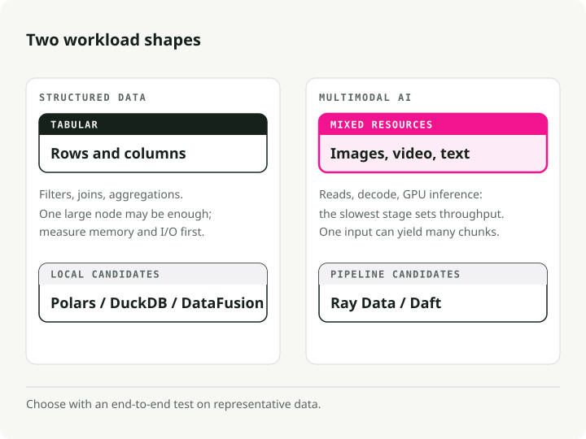
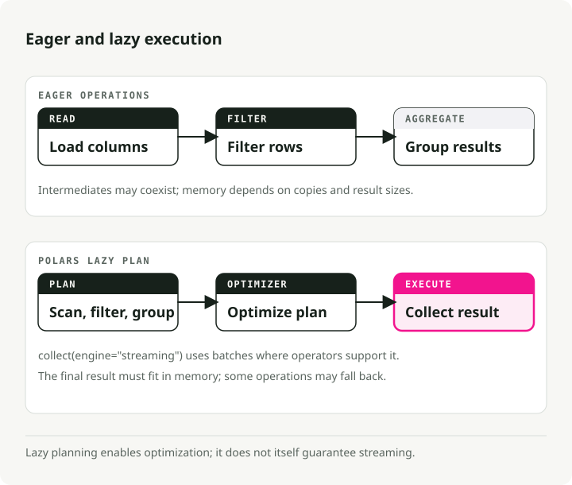
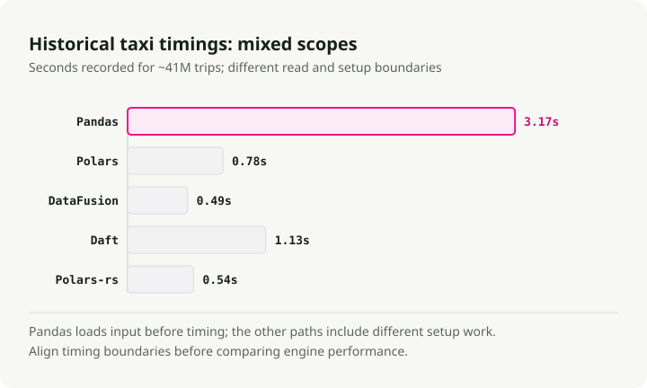
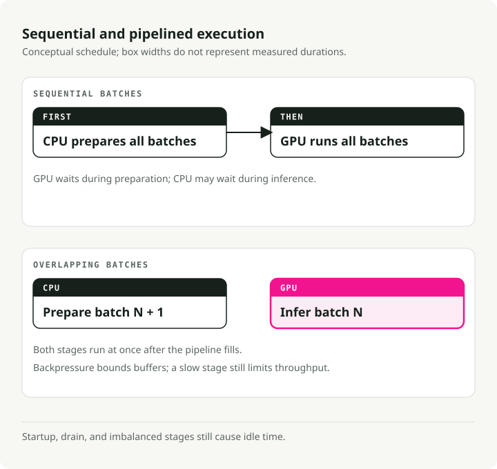
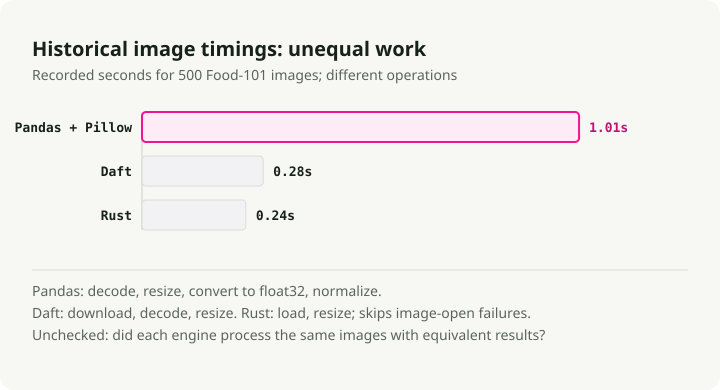
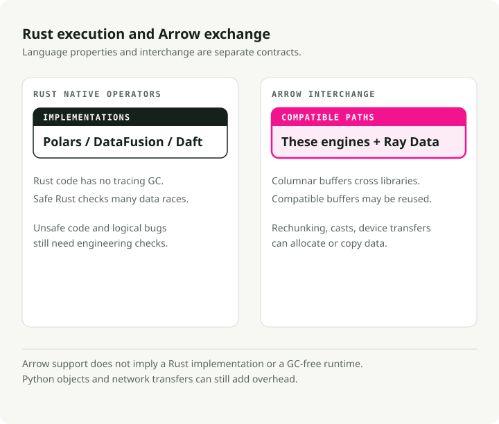
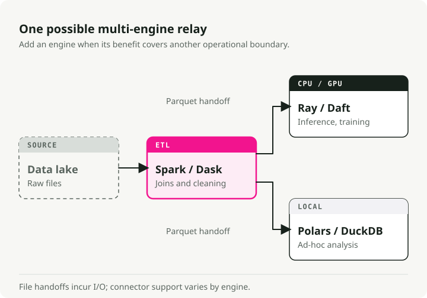

Modern Data Processing Engines Compared: Polars, DataFusion, Daft, Ray Data, Pandas, and Spark
For years, Pandas handled in-memory tabular work and Apache Spark handled the distributed kind. That split worked fine when the data was structured.
Modern pipelines also process images, audio, and video. In these workloads, CPU decoding can starve GPU inference, while JVM garbage collection and Python's Global Interpreter Lock limit throughput. New engines use Rust and Apache Arrow to reduce those costs.
To compare the options, I benchmarked Polars, DataFusion, Daft, Ray Data, and Spark on two real datasets. NYC taxi trips represent tabular work; Food-101 images represent a multimodal pipeline.
The engine-comparison-demo repository contains the code. Run it on your own hardware because engine performance depends on the machine, dataset, and workload.
TL;DR: Start with the shape of the work, not a benchmark winner. Polars is a strong default for local DataFrame pipelines; DataFusion fits teams embedding a query engine; Ray Data and Daft are designed for mixed CPU/GPU pipelines; and Spark remains a mature choice for distributed SQL and ETL. The published speedups in this guide are workload-specific evidence, not portable promises. Re-run the companion benchmarks on your data and hardware before choosing.
Data processing workload types
Engines specialize, so the first question to answer is what kind of workload you actually have. The biggest split is structured vs. multimodal.

Structured or tabular data involves filtering, aggregation, and joins. It is usually CPU-bound and often fits in memory. According to Polars, about 90% of queries process less than 1TB, so many can run on one modern machine instead of a cluster.
Multimodal AI processes images, audio, or video. Inference may run on a GPU while CPU decoding, remote reads, or batching limits the pipeline. The ratio changes with the instance and operators, so measure utilization across the full path rather than sizing the GPU in isolation.
The newer engines target different parts of this space. Native execution can reduce Python overhead, Arrow-compatible interfaces can make data exchange cheaper, and streaming execution can bound memory on datasets larger than RAM. None of those benefits is automatic for every operator or conversion.
Part 1: single-node processing
Pandas favors an eager, in-memory programming model. Many common operations create intermediates, and parallel execution is not coordinated through a query optimizer. That trade-off keeps exploratory code direct, but it can become expensive on larger analytical scans. In Polars's PDS-H benchmark at scale factor 10, Pandas took about 365 seconds for the suite while Polars's streaming engine took 3.89 seconds. The roughly 94x result describes that benchmark and configuration; it is not a general Pandas-to-Polars conversion factor.

Polars for local tabular pipelines
Polars is a practical default when a local DataFrame pipeline has outgrown eager, single-process execution. Its lazy API builds a query plan before execution, enabling optimizations such as predicate pushdown and projection pruning. The engine can then run operators in parallel and, where supported, in streaming batches.
The gap widens as the data grows. At scale factor 100 (~100 GB), Polars's streaming engine finished in 23.94 seconds against 152.27 seconds for its own in-memory engine — about 6x faster, on data that's larger than RAM.
From engine_comparison_examples.ipynb:
import polars as pl
# scan_parquet reads only the schema — no data loaded yet
q = (
pl.scan_parquet("yellow_tripdata_2024-01.parquet")
.filter(
(pl.col("trip_distance") > 5.0)
& (pl.col("total_amount") > 30.0)
)
.group_by("payment_type")
.agg(
pl.col("total_amount").mean().alias("avg_fare"),
pl.col("trip_distance").mean().alias("avg_distance"),
pl.len().alias("trip_count"),
)
)
# The entire plan is optimized and executed here, in parallel
result = q.collect()
The important difference is the execution model. In the lazy query above, Polars can push the filter and column selection into the Parquet scan. That may skip row groups and avoid reading unused columns. A typical eager Pandas pipeline has no whole-query plan to optimize, although careful use of Parquet filters, selected columns, and alternative backends can recover part of the gap.
DataFusion for embedded query engines
Where Polars is a library you use directly, DataFusion is the engine you build other engines on top of. It powers InfluxDB 3.0, GreptimeDB, and Apple's Comet Spark accelerator.
In a November 2024 ClickBench run published by the DataFusion project, DataFusion led the tested single-node Parquet configurations. The Embucket team later published a TPC-H scale-factor-1000 run on one large node. These results show what scale-up can achieve under specific conditions; they do not prove that every 1 TB workload should avoid a cluster.
From engine_comparison_examples.ipynb:
from datafusion import SessionContext
ctx = SessionContext()
ctx.register_parquet("taxi", "yellow_tripdata_2024-01.parquet")
# SQL executed directly against Parquet — no intermediate copies
df = ctx.sql("""
SELECT payment_type,
COUNT(*) AS trip_count,
AVG(trip_distance) AS avg_distance,
AVG(total_amount) AS avg_fare
FROM taxi
WHERE trip_distance > 5.0 AND total_amount > 30.0
GROUP BY payment_type
ORDER BY trip_count DESC
""")
result = df.to_pandas()
DataFusion's strength is its modularity. The extension APIs cover custom catalogs, table providers, optimizer rules, and execution plans, which is why it shows up whenever someone is building a custom data platform or embedding a query engine in their own product.
Daft for multimodal data
Daft makes images, audio, video, and embeddings part of the DataFrame workflow. It provides native expressions for operations such as image decoding and URL downloads, so common preprocessing paths do not require a row-by-row Python loop. That integration is the main reason to consider it over a general tabular engine.
From engine_comparison_examples.ipynb:
import daft
df = daft.read_parquet("yellow_tripdata_2024-01.parquet")
result = (
df.where(
(daft.col("trip_distance") > 5.0)
& (daft.col("total_amount") > 30.0)
)
.groupby("payment_type")
.agg(
daft.col("total_amount").mean().alias("avg_fare"),
daft.col("trip_distance").mean().alias("avg_distance"),
daft.col("trip_distance").count().alias("trip_count"),
)
.collect()
)
The API will feel familiar if you know Pandas, but the engine is the same Rust + Arrow stack you find in Polars and DataFusion. Where Daft pays off is when the "rows" in your DataFrame are images, PDFs, or tensors.
Single-node benchmark
I ran all four engines, plus native Rust via Polars-rs, on ~41M NYC yellow taxi trips for full year 2024. Full results in the demo repo:

At this size (~660 MB of Parquet), all four newer engines finish quickly. The 94x Polars-to-Pandas figure above comes from PDS-H; my 41-million-row taxi workload produced a smaller gap. Polars, DataFusion, Daft, and Polars-rs landed in the same broad range, with DataFusion recording the lowest total time in this run. That is a useful result for this query, not a stable ranking: API fit and repeated measurements on representative data should decide between engines this close together.
Part 2: multimodal data
Tabular ETL usually shrinks data: filter, aggregate, write less than you read. Multimodal AI pipelines do the opposite. A single document path might fan out into dozens of text chunks and embedding vectors.
In a conventional PySpark pipeline, images and audio often enter as binary data and move into Python libraries for decoding or transformation. Crossing the JVM/Python boundary and serializing results can become a large part of wall-clock time. Spark can use Arrow-based paths, vectorized UDFs, and accelerator integrations, but those choices need explicit design and measurement.
Pipelined execution and GPU utilization
Spark schedules work in stages separated by shuffle boundaries. A straightforward implementation may place download, decode, and inference in a sequence that leaves either CPU or GPU capacity waiting. Spark supports GPU resource scheduling and plugins, so idle time is not inevitable; the point is that overlap and backpressure are not automatic properties of an ordinary PySpark DataFrame job.

Pipelined execution is the alternative. Instead of running stages back-to-back, the engine overlaps I/O, CPU work, and GPU inference, so the slow component is the only thing waiting at any given time.
Image-processing benchmark
I benchmarked image processing on 500 real photographs from the Food-101 dataset. Results from the demo repo:

Polars and DataFusion are absent because this test targets native image operations rather than tabular expressions. On this 500-image run, Daft's image path was 3.6x faster than the Pandas + Pillow baseline, while the Rust implementation was 4.2x faster. The sample is useful for exposing orchestration overhead, but it is too small to predict production throughput by itself.
Part 3: distributed processing
Once a single machine isn't enough, you have to pick how to spread the work. This is where the architectural differences between engines actually start to matter.
Apache Spark
Spark is a mature option for large tabular ETL, shuffle-heavy joins, and organizations already operating its ecosystem. Its lineage-based recovery and broad platform support matter when reliability and operational familiarity outweigh local speed. Mixed CPU/GPU pipelines require more deliberate resource configuration and pipeline design than the SQL path, which is where Ray Data and Daft offer a more focused abstraction.
From distributed_spark.ipynb:
from pyspark.sql import SparkSession
from pyspark.sql import functions as F
spark = SparkSession.builder \
.appName("TaxiETL") \
.config("spark.sql.adaptive.enabled", "true") \
.getOrCreate()
orders = spark.read.parquet("s3a://lake/taxi/*.parquet")
zones = spark.read.csv("s3a://lake/taxi_zones.csv", header=True)
# Spark excels at this: joining massive tables with a shuffle
result = (
orders
.filter(F.col("trip_distance") > 5.0)
.join(zones, orders.PULocationID == zones.LocationID, "inner")
.groupBy("Borough")
.agg(
F.sum("total_amount").alias("total_revenue"),
F.avg("total_amount").alias("avg_fare"),
)
.orderBy(F.desc("total_revenue"))
)
Ray Data for heterogeneous compute
Ray Data was designed around AI workloads. Instead of Spark's stage barriers, it uses a streaming model that keeps GPUs fed. The feature that earns its existence is mixed resource scheduling: you can declare that one actor wants "1 GPU, 4 CPUs" and another wants only CPUs, and Ray figures out the rest.
Amazon reported more than $120 million in annual savings after moving selected internal data-processing workloads from Spark to Ray. The report cites 91% better cost efficiency in the proof of concept and 82% in production per GiB of S3 input. The scale is notable, but this is a migration case study for specific workloads rather than an expected saving for a typical Ray adoption.
From distributed_ray.ipynb:
import ray
ray.init()
ds = ray.data.read_images("s3://my-bucket/food101/")
class ImageClassifier:
def __init__(self):
import torch
from torchvision.models import resnet18, ResNet18_Weights
self.model = resnet18(weights=ResNet18_Weights.DEFAULT).cuda()
self.model.eval()
self.preprocess = ResNet18_Weights.DEFAULT.transforms()
def __call__(self, batch):
import torch
tensors = torch.stack([
self.preprocess(img) for img in batch["image"]
]).cuda()
with torch.no_grad():
preds = self.model(tensors)
return {
"prediction": preds.argmax(dim=1).cpu().numpy(),
"confidence": preds.max(dim=1).values.cpu().numpy(),
}
# ActorPoolStrategy creates persistent GPU workers
predictions = ds.map_batches(
ImageClassifier,
compute=ray.data.ActorPoolStrategy(size=4),
num_gpus=1,
batch_size=64,
)
predictions.write_parquet("s3://output/predictions/")
One detail worth knowing: as you add more CPUs per GPU, Ray Data scales while other engines plateau. In Anyscale's benchmarks, going from a 4:1 to a 32:1 CPU-to-GPU ratio gave a 3x speedup on image inference, because the CPU feeders finally kept up with the GPU.
Distributed Daft
Daft scales out through its Flotilla engine: one Swordfish worker per node, with Flotilla on top doing cluster-wide scheduling. Swordfish handles local Rust execution and pipelines I/O with compute through small-batch streaming, so each node stays busy without waiting on the next stage.
In benchmarks published by Daft, Flotilla ran 2–18x faster than the tested Spark implementations across four multimodal workloads. The largest gap was a video-object-detection case. Treat the result as evidence that execution design matters for these pipelines, then compare it with the competing Anyscale results below and with a local test.
Anyscale, the company behind Ray, published a competing benchmark in which Ray Data closed or reversed the gap on high-CPU instances after tuning. Together, the two vendor studies are a reason to test representative operators and CPU-to-GPU ratios, not to infer a durable league table.
From distributed_daft.ipynb:
import daft
from daft import col
# Daft's Flotilla engine distributes work across the cluster
df = daft.read_parquet("s3://data-lake/pdf_metadata/*.parquet")
# Download PDFs — Daft parallelizes downloads in Rust
df = df.with_column("pdf_bytes", col("pdf_url").url.download())
# Define a GPU UDF for embedding generation
@daft.udf(return_dtype=daft.DataType.list(daft.DataType.float32()))
class TextEmbedder:
def __init__(self):
from sentence_transformers import SentenceTransformer
self.model = SentenceTransformer("all-MiniLM-L6-v2", device="cuda")
def __call__(self, text_col):
texts = text_col.to_pylist()
embeddings = self.model.encode(texts, batch_size=32)
return [emb.tolist() for emb in embeddings]
# Daft schedules CPU downloads and GPU embeddings simultaneously
df = df.with_column("embedding", TextEmbedder(col("text")))
df.write_parquet("s3://output/embeddings/")
Distributed comparison
| Feature | Spark | Ray Data | Daft (Flotilla) |
|---|---|---|---|
| Execution Model | Task-per-core, partition-based | Streaming tasks and actors | Swordfish-per-node, streaming batches |
| Strengths | Massive SQL/ETL, fault tolerance | Heterogeneous compute, GPU saturation | Multimodal pipelining, bounded memory |
| GPU controls | Resource scheduling plus ecosystem plugins | Explicit task and actor resources | Integrated CPU/GPU pipeline scheduling |
| Typical tuning | Executors, memory, partitions, accelerators | Batches, actors, object store | Batches, resources, I/O concurrency |
| Good evaluation case | Large SQL/ETL and shuffle-heavy jobs | Training or inference with mixed resources | Multimodal ingestion and transformation |
Part 4: the role of Rust and Arrow
Underneath the competition, the convergence is the more interesting story. Polars, Daft, and DataFusion use Rust extensively, while Ray includes native components alongside its Python APIs. All can exchange data through parts of the Apache Arrow ecosystem.

The Arrow PyCapsule Interface (__arrow_c_stream__ protocol) gives compatible libraries a standard way to exchange Arrow streams. Transfers can avoid row-wise serialization and may reuse buffers when schemas and memory layouts are compatible. Materialization, rechunking, type conversion, or device transfer can still copy data, so verify the handoff with profiling rather than assuming it is free.
from datafusion import SessionContext
import polars as pl
# Compute in DataFusion (Rust-native execution)
ctx = SessionContext()
ctx.register_parquet("events", "events.parquet")
df = ctx.sql("""
SELECT user_id, COUNT(*) as event_count
FROM events WHERE event_type = 'purchase'
GROUP BY user_id HAVING COUNT(*) > 5
""")
# Convert through Arrow; compatible buffers may be reused
arrow_table = df.to_arrow_table()
df_polars = pl.from_arrow(arrow_table)
# Continue analysis in Polars
result = df_polars.with_columns(
pl.col("event_count").rank().alias("rank")
).sort("rank")
Why do these newer engines use Rust for native execution?
-
No tracing garbage collector in Rust code. Ownership gives native operators more direct control over allocation and deallocation. That can reduce GC-related latency, but it does not prevent memory pressure or out-of-memory failures.
-
Compact native representations. Rust structures do not carry Java object headers. The practical benefit depends on the engine's layout: columnar JVM systems also avoid representing every value as an individual object.
-
Stronger concurrency checks. Safe Rust rules out many data races at compile time. Engine code can still contain unsafe blocks and logical concurrency bugs, but the language narrows the failure surface.
Combined with Arrow's columnar memory layout, these choices can reduce allocation and serialization overhead. They do not remove it at every boundary; Python objects, network transport, incompatible schemas, and device movement still matter.
Part 5: adopting multiple engines
You do not have to force the whole platform through one engine. Composition is useful when its boundary is cheaper than making one system handle every workload.

One possible relay uses Spark for established lakehouse joins, writes an open table or file format, and hands the result to Ray Data or Daft for GPU inference or multimodal transforms. Polars or DuckDB can serve local analysis over the same files. A smaller team may need only one of these engines; add another when a measured bottleneck justifies the operational boundary.
What makes this composition possible is open formats: Parquet, Delta, Iceberg, Arrow. Every engine in the stack reads and writes them natively, so the handoff between stages is just a file path.
Engine selection by evaluation case
| Evaluation case | Shortlist | Validate |
|---|---|---|
| Local analytical DataFrames | Polars / DuckDB | API fit, memory, query mix |
| Existing distributed SQL/ETL | Apache Spark | Shuffle behavior, operations, cost |
| Python-native parallel work | Dask / Ray | Scheduler overhead, failure model |
| Mixed CPU/GPU training or inference | Ray Data / Daft | Accelerator utilization, backpressure |
| Multimodal ingestion | Daft / Ray Data | Native operators, retry behavior |
| Embedded query engine | DataFusion | Extension APIs, SQL coverage |
Diagonal scaling
For a long time the choice was scale up (a bigger machine) or scale out (more machines). Polars Cloud is doing something in between, which they call diagonal scaling: scale horizontally while reading from cloud storage to max out I/O, then collapse to a single big node once filters and aggregations have shrunk the data, skipping the distributed shuffle entirely.
The broader lesson is to compare cost per successful job, not hourly instance price. A larger node can be cheaper when the runtime reduction outweighs its higher rate, but the result depends on I/O, memory pressure, and the amount of work eliminated before a shuffle.
Reproduce the comparison
The companion demo repository contains the scripts, notebooks, and environment used for the comparisons. The quick command below uses one month of taxi data; follow the repository's dataset instructions to recreate the larger full-year run shown earlier.
# Install dependencies
uv sync
# Run the tabular benchmark (~2.9M NYC taxi trips)
uv run python -m engine_comparison.benchmarks.tabular
# Run the multimodal benchmark (500 real food photos)
uv run python -m engine_comparison.benchmarks.multimodal
# Run native Rust benchmarks (Polars-rs + image crate)
cd rust_benchmark && cargo run --release && cd ..
The repo also has notebooks for side-by-side API comparisons and Docker Compose setups for local distributed runs of Spark, Ray, and Daft.
Key takeaways
-
Prove that one machine is insufficient. Scale-up results show that some large analytical scans fit on a single node. Measure memory, I/O, spill, and recovery requirements before accepting cluster overhead.
-
Execution models matter more than familiar syntax. Lazy planning, pushdown, streaming, and parallel operators explain much of the gap between an eager DataFrame script and an analytical engine.
-
Measure the whole accelerator pipeline. Decode, network I/O, batching, serialization, and backpressure determine whether a GPU stays busy. Ray Data and Daft make this overlap a central abstraction; Spark can support it with additional design and tooling.
-
Shortlist by workload, then benchmark. Use ecosystem fit to narrow the field and a representative end-to-end job to choose. Vendor benchmark results are hypotheses, not guarantees.
-
Open formats keep the choice reversible. Arrow-compatible interfaces, Parquet, and open table formats can reduce handoff costs. Confirm whether a particular conversion reuses buffers or copies them.
If you need a starting point, try Polars for a local tabular pipeline and Daft or Ray Data for a mixed CPU/GPU pipeline. Choose Spark when its distributed execution, ecosystem, or existing operational base solves a requirement—not only when the dataset crosses an arbitrary size.
References
Benchmarks and performance data
- Polars PDS-H Benchmarks - Polars streaming vs. Pandas at SF-10 (94x) and SF-100 (6.4x over in-memory)
- DataFusion ClickBench Results (Nov 2024) - Project-published single-node Parquet results
- Embucket: TPC-H SF-1000 on DataFusion - Full TPC-H at ~1 TB on a single node
- Amazon Spark-to-Ray Migration - $120M/year savings, 82% production cost efficiency
- Daft Flotilla Benchmarks - 2–18x faster than Spark on multimodal workloads
- Anyscale Ray vs. Daft Benchmarks - Competing vendor benchmark for multimodal workloads
Engines and frameworks
- Polars - Rust DataFrame library with lazy execution
- Apache DataFusion - Embeddable Rust query engine (GitHub)
- Daft - Multimodal-native distributed DataFrame
- Ray - Distributed compute framework for AI (Data Internals)
- Apache Spark - Distributed ETL and SQL engine
- DuckDB - In-process analytical SQL engine
- Dask - Python-native parallel computing
Architecture and ecosystem
- Polars Cloud: Diagonal Scaling - Dynamic vertical/horizontal scaling
- Daft Flotilla Architecture - Swordfish + Flotilla distributed engine
- Apache DataFusion Comet - Spark accelerator originally developed at Apple
- Apache Arrow - Columnar in-memory format (Flight RPC, PyCapsule Interface)
- InfluxDB 3.0 + DataFusion - Time-series database built on DataFusion
- GreptimeDB - Observability database using DataFusion
Demo repository
- engine-comparison-demo - Companion code for this article: benchmarks, notebooks, and Docker Compose for Spark/Ray/Daft
Datasets
- NYC Taxi Trip Records - NYC TLC yellow taxi data (Parquet, ~2.9M rows/month)
- Food-101 Dataset - 101K food images from ETH Zurich (Bossard et al., ECCV 2014)